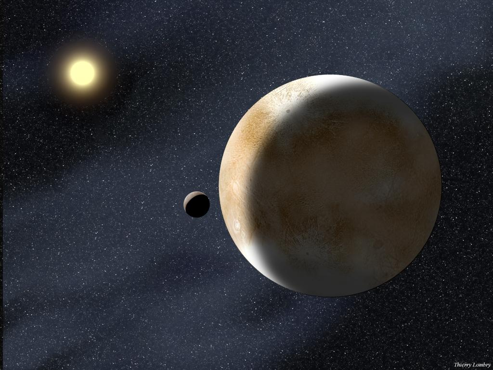
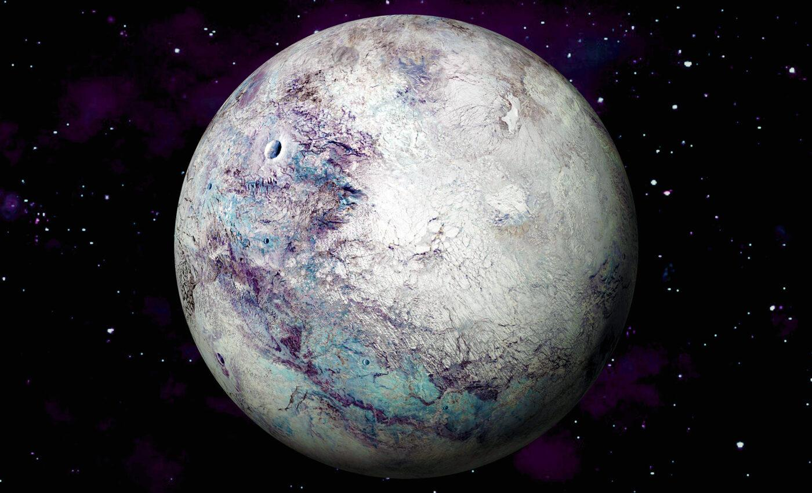
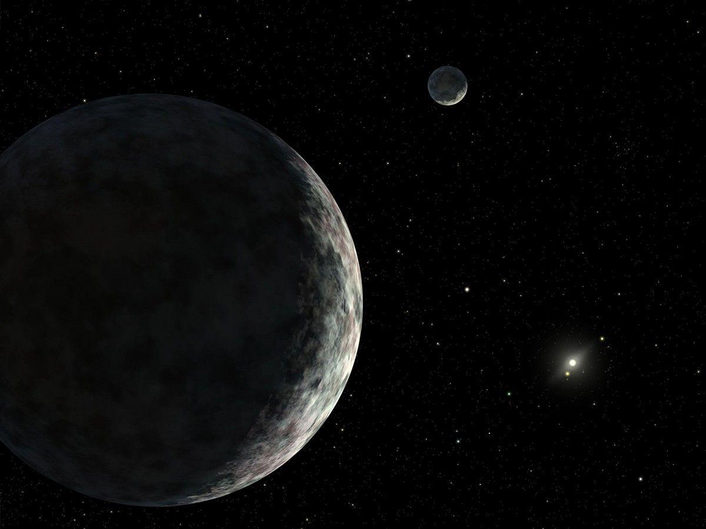
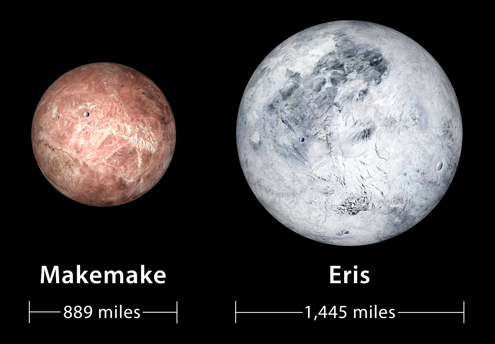

Dysnomia
Dysnomia is Eris’s only known moon and plays an important role in studying the dwarf planet.
Eris is one of the largest dwarf planets in the solar system, located far beyond Neptune in a region called the scattered disk.
It was discovered in 2005 and is slightly smaller than Pluto, but more massive.
The discovery of Eris led scientists to redefine what a planet is, which resulted in Pluto being reclassified as a dwarf planet in 2006.
Discover More ›
Eris — a distant, icy dwarf planet beyond Neptune.

Eris is one of the coldest known objects in the solar system.
Eris is extremely far from the Sun, making it one of the coldest known objects in the solar system.
Its average temperature is around -230°C, and its surface is covered in frozen methane ice.
Because it is so distant, sunlight is very weak, and Eris appears as a faint, icy world.
Eris has one of the most reflective surfaces in the solar system.
It is covered in methane ice, which reflects sunlight efficiently and makes it appear almost white.
Scientists believe it may have a rocky interior beneath its icy surface.

Methane ice gives Eris its bright, reflective appearance.

Eris may form a temporary atmosphere during its orbit.
Eris does not have a permanent atmosphere, but it may form a temporary one when it is closer to the Sun.
This atmosphere would be made of gases like methane and would freeze back onto the surface as temperatures drop.
Eris has one known moon called Dysnomia, which helped scientists determine its mass.
Dysnomia is Eris’s only known moon and plays an important role in studying the dwarf planet.
The moon’s orbit helped scientists calculate the mass of Eris accurately.
Eris and Dysnomia form a simple two-body system in deep space.
About 557 Earth years
About 25.9 hours
Highly elliptical and long
Highly tilted compared to planets
One of the largest dwarf planets
Extremely cold and distant
Very bright reflective surface
No stable atmosphere
Has one moon (Dysnomia)
One of the longest orbits
Discovery led to Pluto’s reclassification
Eris is important because it changed our understanding of the solar system and forced scientists to redefine what a planet is.
It represents the outermost frontier of the solar system—cold, distant, and largely unexplored.
Studying Eris helps scientists learn about the formation of distant objects beyond the main planets.
A video exploring dwarf planets in the solar system.